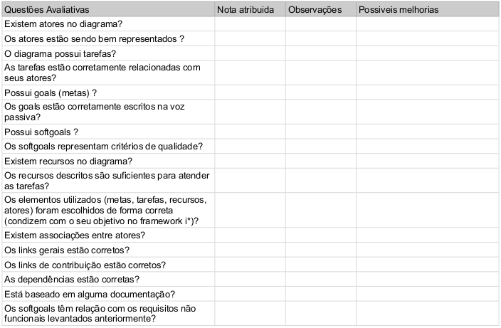
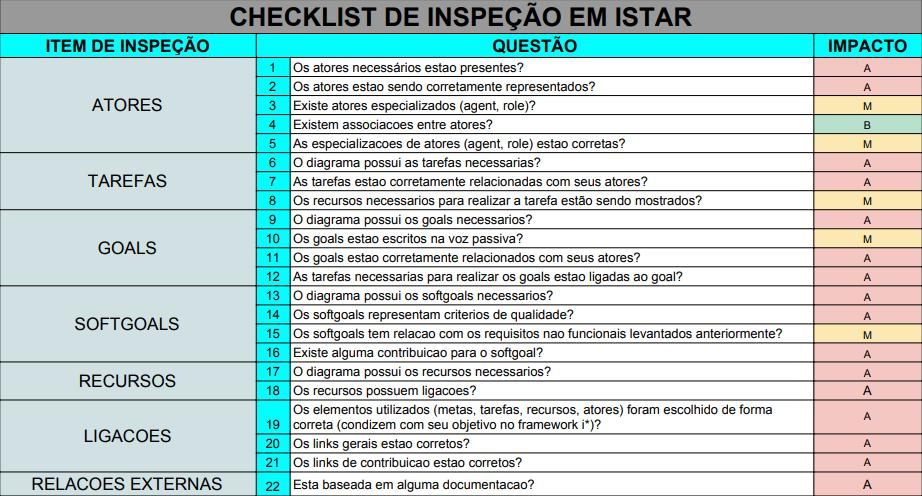
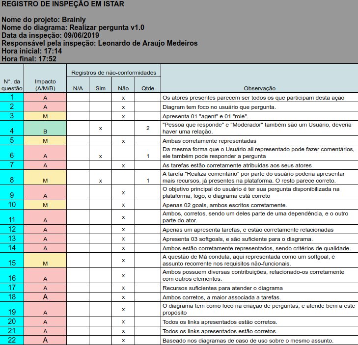
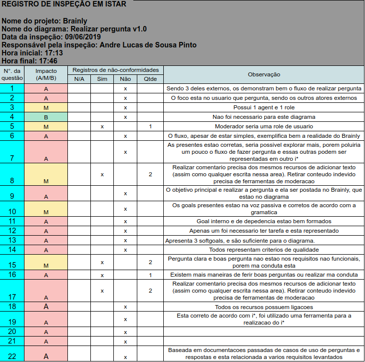
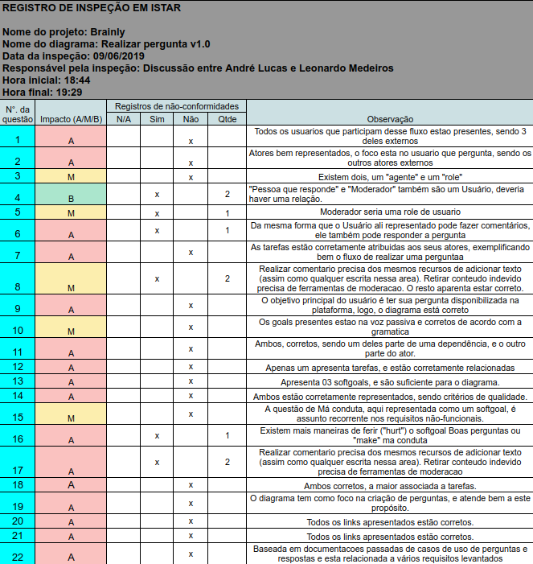
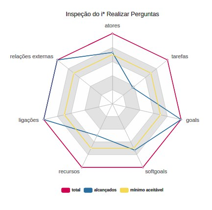
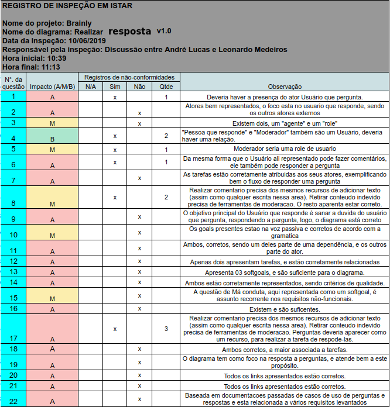
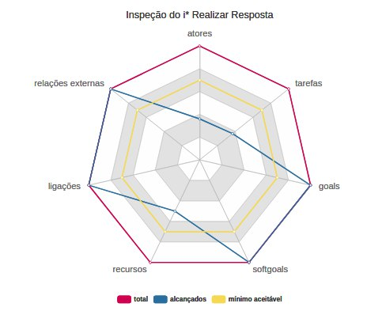
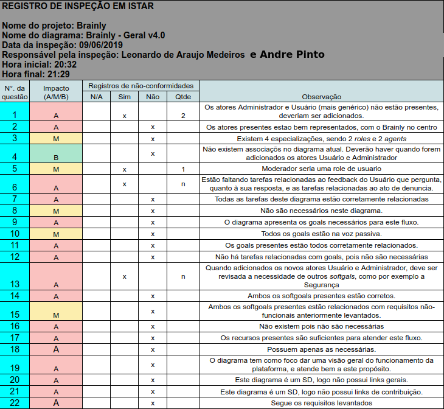
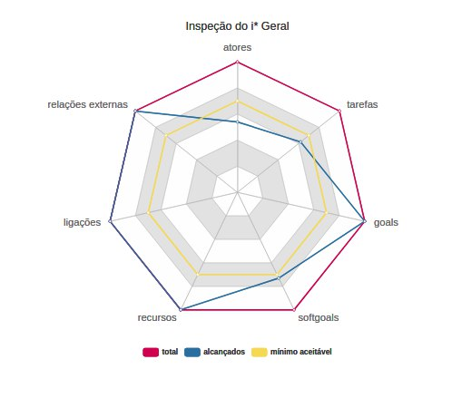

iStar
Versionamento
| Versão | Data | Modificação | Autor |
|---|---|---|---|
| 1.0 | 09/06/2019 | Adiciona modelo de verificação (v1) | Leonardo Medeiros, Andre Pinto |
| 1.1 | 09/06/2019 | Adiciona modelo de verificação (v2) | Leonardo Medeiros, Andre Pinto |
| 1.2 | 09/06/2019 | Adiciona a verificação do modelo i* "realizar pergunta v1.0" por Andre, Leonardo e ambos | Leonardo Medeiros, Andre Pinto |
| 1.3 | 09/06/2019 | Adiciona a verificação do modelo i* "Brainly - Geral v4.0" por Andre e Leonardo | Leonardo Medeiros, Andre Pinto |
| 1.4 | 10/06/2019 | Adiciona a verificação do modelo i* "Gamificação v1.0" | Welison Regis |
| 1.5 | 10/06/2019 | Adiciona rastreabilidade | Welison Regis |
| 1.6 | 10/06/2019 | Adiciona gráficos | Lieverton Silva |
INTRODUÇÃO
Os modelos de verificação de i* foram baseados no material disponibilizado pelos professores. A análise mostra o que tem ou não sido cumprido pelos objetos analisados pela equipe em determinados critérios descritos.
OBJETIVO
Reconhecer e apontar erros presentes nos modelos atuais visando sua melhoria e correção.
METODOLOGIA
O modelo de verificação elaborado pela equipe foi realizado em dupla e após ter o modelo em mãos, a dupla se separou e preencheu individualmente o formulário, ao concluir, se juntou e discutiu, unindo suas ideias a fim de melhorar a análise do modelo em questão. Durante a aplicação do processo a dupla percebeu que a abordagem tomou muito tempo e não foi tão eficiente, logo a abordagem foi alterada e a dupla passou a responder o formulário discutindo cada pergunta desde o começo.
MODELO DE VERIFICAÇÃO - i* v1.0

MODELO DE VERIFICAÇÃO - i* v2.0

VERIFICAÇÃO DO ISTAR "REALIZAR PERGUNTA V1.0" - v1.0
Rastreabilidade: i* de Gamificação
Individual Leonardo 
Individual Andre 
Sintese: Leonardo e Andre
Obs: Devido ao metodo de gravação utilizado, os audios dos participantes ficaram separados (apesar de ser uma conversa simultanea), para melhor entendimento basta reproduzi-los simultaneamente.

Gráfico de critério de aceitação

VERIFICAÇÃO DO ISTAR "REALIZAR RESPOSTA V1.0" - v1.0
Rastreabilidade: i* de Gamificação
Sintese: Leonardo e Andre

Gráficos de critério de aceitação

VERIFICAÇÃO DO ISTAR "BRAINLY - GERAL V4.0" - v1.0
Sintese: Leonardo e Andre
Audio: Discussao

Gráfico de critério de aceitação

VERIFICAÇÃO DO ISTAR "Gamificação v1.0" - v1.0
Rastreabilidade: i* de Gamificação